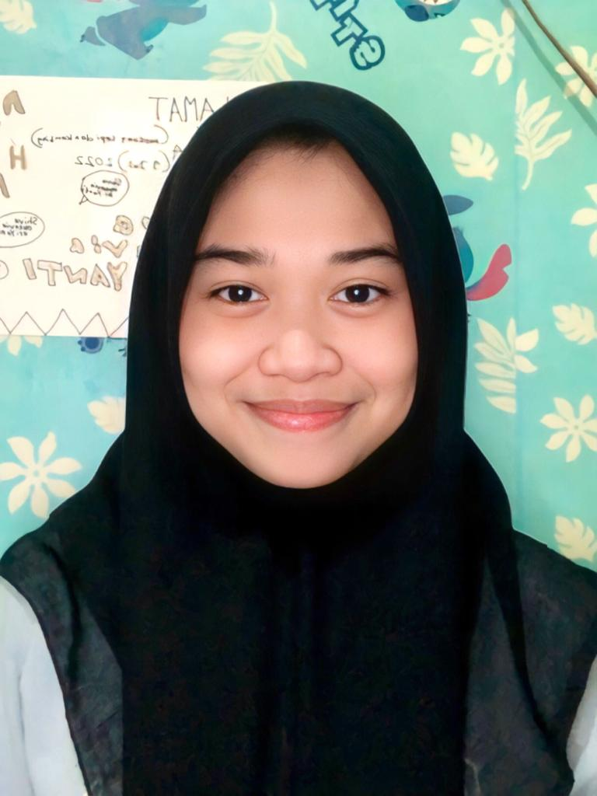

Profile Name
Shofi Syahria Mahram
Jl. Gaing Raya RT001/010 No.19
Kel. Pisangan Timur, Kec Pulogadung
Surabaya, 31 Maret 2002
DKI Jakarta, Indonesia, Jakarta Timur
shof22012@student.nurulfikri.ac.id"
082123114750
Aku perempuan lahir pada tanggal 31 Maret 2002 di Surabaya, aku dua bersaudara loh, sekarang aku tinggal di Jakarta, aku tinggal bersama keluarga besar ku, aku lulus tahun 2020, saat baru lulus aku langsung dipanggil ditempat kerja yang dimana dulunya adalah tempat aku PKL (Praktik Kerja Lapangan) aku bekerja disana kurang lebih satu tahun, lalu aku memutuskan untuk resign karna cukup buruk lingkungannya jika harus diteruskan, setelah resign aku menganggur 3bulan, tentunya tidak cukup sampai situ, aku mendapatkan pekerjaan baru di Apotik, aku yang orang awam soal obat-obatan belajar memahami selama beberapa hari, seiring berjalannya waktu aku hafal semua jenis obat dan manfaat obat-obatan tersebut.
Setelah pekerjaan yang kulalui aku memutuskan untuk berkuliah, namun sempat kaget karena sudah cukup lama tidak bertemu dengan pelajaran, selain aku bekerja, berkuliah, aku juga suka jalan-jalan atau bisa disebut jaman anak sekarang healing, nyatanya bukan healing tapi menghabiskan uang hihi.
Berikut beberapa perjalan, pengalaman yang aku abadikan supaya bisa dikenang